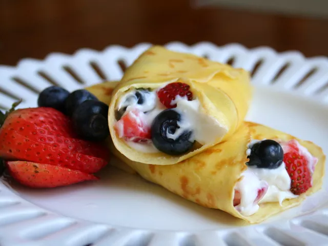

Home
Cheesecake Crepe Roll-Ups

Description
A perfect breakfast for brunches, valentine's day, breakfast in bed, or mothers day
Ingredients
- 2 tablespoons all-pupose flour
- 2 tablespoons milk
- 2 eggs
- 2 teaspoons honey
- 1 pinch salt
- 2 tablespoons butter, divided
- 1 (8 ounce) package creame cheese, softened
- 1/2 cup confectioners' sugar
- 1/4 cup mixed frozen berries, slightly thawed
Steps
- Whisk together the flour, milk, eggs, honey, and salt in a bowl to make a smooth batter.
- Melt 1 tablepoon of butter in a nonstick crepe pan over medium heat until the foam disappears
- Pour about 2 tablespoons of the batter into the pan, swirl to cover the bottom of the pan with a thin layer of batter. Cook until the crepe is no longer runny about 1 minute.
- flip and cook the other side for an additional 1 minute. Repeat with additional butter and crepe mix. Makes 4 crepes.
- Set the crepes aside on paper towel
- In a bowl, mix the cream cheese with 1/2 cup confectioners' sugar to make a creamy spread. Very gently stir in the berries
- Spread the cream cheese filling evenly over the crepes and roll up.
- Refrigerate untiul chilled; slice in 1-inch sections to serve